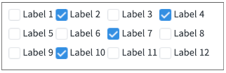
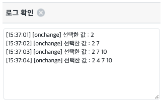
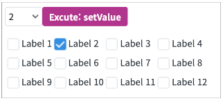
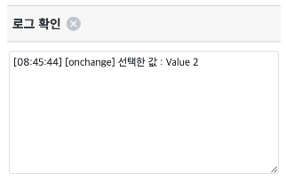
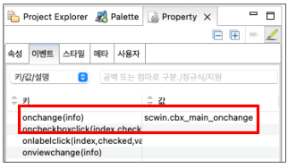

CheckBox의 onchange 이벤트 예제입니다. onchange 이벤트는 CheckBox의 선택 값이 변경될 때 발생하는 이벤트로, 사용자가 화면을 조작해서 발생한 변화와 개발자가 script로 작성한 기능들에 의해 변경된 것을 모두 포함해서 발생합니다.
화면 조작으로 onchange 이벤트 발생시키기
script 조작으로 onchange 이벤트 발생시키기
onchange가 발생하면 로그 확인 영역에 이벤트 발생 로그가 출력됩니다.
그림 1.브라우저(Chrome) 실행 예시

그림 2.브라우저(Chrome) 실행 예시

선택한 Index가 선택되면서 onchange 이벤트가 발생합니다.
그림 3.브라우저(Chrome) 실행 예시

그림 4.브라우저(Chrome) 실행 예시

STEP 1. CheckBox의 이벤트를 정의합니다.
컴포넌트의 Property View의 이벤트 탭에서 onchange이벤트를 명시하고 Script를 작성합니다.
그림 5.웹스퀘어5 SP5 스튜디오의 Property View(이벤트 창) 예시

/** CheckBox의 onchange 이벤트 */
scwin.cbx_main_onchange = function (info) {
// 로그 출력
let strLog = "[onchange] 선택한 값 : " + info.newValue;
$c.frame.printExampleLog(strLog, txa_log, false);
console.log(strLog);
};<xf:select ... style="" ev:onchange="scwin.cbx_main_onchange" ... >
<xf:choices>
<xf:item>
<xf:label><![CDATA[Label 1]]></xf:label>
<xf:value><![CDATA[1]]></xf:value>
</xf:item>
<!-- 중략 -->
</xf:choices>
</xf:select>onchange(info)